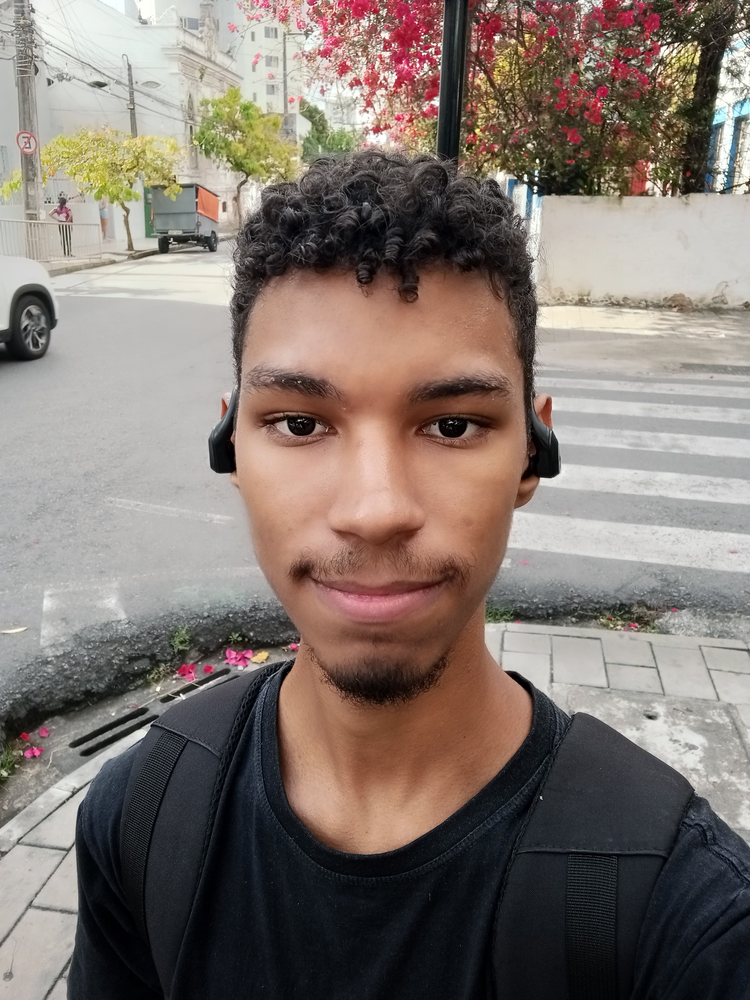
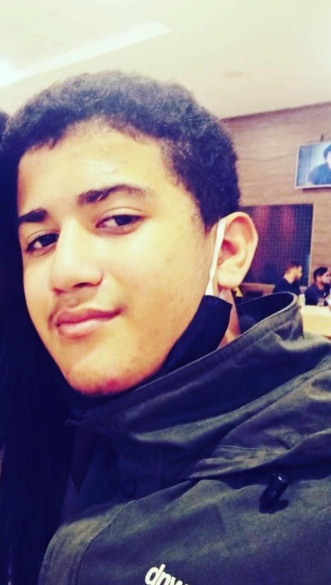
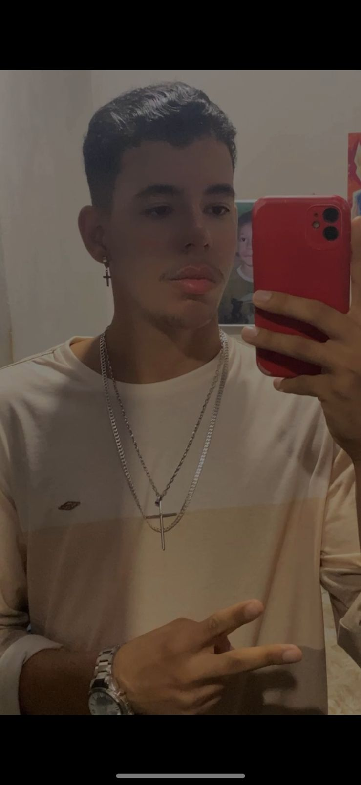
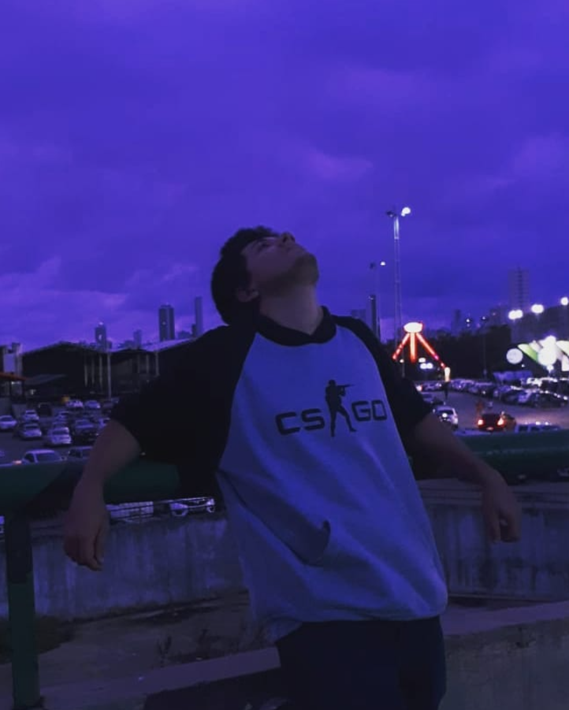

Alesson Carlos - The driver
Alesson Carlos, também conhecido como "The Driver", é motorista de aplicativo e, com seu amor pelos passageiros, tem uma dedicação quase bíblica, tipo o amor de Judas por Jesus. Ele é fã de carteirinha da franquia GTA, especialmente de GTA San Andreas e GTA IV, e é claro que seu interesse pela tecnologia não poderia ficar de fora, por isso ele estuda Análise e Desenvolvimento de Sistemas (ADS). Tudo isso enquanto dirige, ama seus passageiros e sonha com um futuro dominado pela programação.

Gabriel Alvaro - Aurelion LoL
Gabriel Alvaro, também conhecido pelo apelido "Aurelion Lol" ,é um talento nas artes, especialmente quando o assunto é desenho, com grande habilidade em criar ilustrações no estilo hentai. Sua paixão por jogos se reflete no amor por League of Legends, o que inspirou seu apelido, e ele também é um estudante dedicado de Análise e Desenvolvimento de Sistemas (ADS), sempre em busca de aprender mais e expandir seus conhecimentos na área de tecnologia.

João Victor - O Forasteiro
João Victor, ou "O Forasteiro", vem de uma terra tão distante chamada Igarassu, onde ele tem a habilidade única de sair no passado e chegar no futuro — ou melhor, sempre se atrasando para as aulas. Ele tem um gosto peculiar por animes, com destaque para "Boku no Piku", e adora jogos, tecnologia e tudo que envolva passar o tempo de forma bem interessante. Com o desejo de sair da casa dos pais e conquistar a independência, ele resolveu estudar Análise e Desenvolvimento de Sistemas (ADS), porque, obviamente, a tecnologia é o caminho para ele viver o presente ( morando mais perto ).

Kaio de onde? - Ferreira Costa
Kaio de onde? - Ferreira Costa, um verdadeiro trabalhador exemplar da rede Ferreira Costa, se dedica na força da raiva, sempre elogiando a empresa com um sorriso tão forçado quanto o esforço que ele faz para não explodir de frustração. Amante de jogos de luta, ele aproveita cada batalha virtual como uma oportunidade de imaginação, onde o adversário é sempre seu supervisor — porque, claro, derrotá-lo no jogo é a única forma de lidar com o estresse do dia a dia. E, para completar seu plano de vingança épica, Kaio estuda Análise e Desenvolvimento de Sistemas (ADS), com o grandioso objetivo de, um dia, invadir o sistema da Ferreira Costa e apagar tudo. Porque, nada como um pouco de tecnologia para resolver problemas antigos, né?

Sabine - The gamer
Sabine, o famoso "The Gamer", é aquele cara que joga mais que qualquer um. Sua conta na Steam está avaliada em 50 mil reais, resultado de um investimento um tanto peculiar envolvendo cartões e contas bancárias puxadas. Ele finge que vai para a faculdade para estudar, mas isso é só porque o pai mandou. Claro, ele sempre dá um jeitinho de continuar jogando, mesmo quando deveria estar na aula. Quais são seus jogos favoritos, você pergunta? The Sims, Amor Doce e Rising Lovers, porque, para ele, a vida real nunca é tão interessante quanto as suas jogadas no mundo virtual.